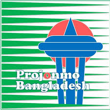

<div>
    <!-- header image -->
    <!-- if phone screen size, make it the smaller skyline image as header -->
    <picture>
        <source srcset="images/skyline2small.png" media="(max-width: 600px)">
        <source srcset="images/skyline2.png" media="(min-width: 601px)">
        
    </picture>


    <div class="title">
        <h1>Projonmo Bangladesh</h1>
    </div>
    <!-- Nav Bar -->
    <nav class="navbar navbar-expand-lg bg-body-tertiary custom-navbar">
        <div class="container-fluid">

            <!-- <a class="navbar-brand" href="#">Navbar</a> -->
            <!-- OLD NAV BAR ICON VS NEW ONE -->
            <!-- </img> -->
            </img>

            <button class="navbar-toggler" type="button" data-bs-toggle="collapse" data-bs-target="#navbarNavDropdown"
                aria-controls="navbarNavDropdown" aria-expanded="false" aria-label="Toggle navigation">
                <span class="navbar-toggler-icon"></span>
            </button>
            <div class="collapse navbar-collapse" id="navbarNavDropdown">
                <ul class="navbar-nav">
                    <li class="nav-item">
                        <a class="nav-link active" aria-current="page" href="index.html">Home</a>
                    </li>
                    <li class="nav-item">
                        <a class="nav-link" href="news.html">News</a>
                    </li>
                    <!-- Information Dropdown -->
                    <li class="nav-item dropdown">
                        <a class="nav-link dropdown-toggle" href="#" role="button" data-bs-toggle="dropdown"
                            aria-expanded="false">
                            Information
                        </a>
                        <ul class="dropdown-menu">
                            <li><a class="dropdown-item" href="InformationDropdown/mosques.html">Mosques</a></li>
                            <li><a class="dropdown-item" href="InformationDropdown/churches.html">Churches</a></li>
                            <li><a class="dropdown-item" href="InformationDropdown/temples.html">Temples</a></li>
                            <li><a class="dropdown-item" href="InformationDropdown/bazaar.html">Bazars</a></li>
                        </ul>
                    </li>
                    <li class="nav-item">
                        <a class="nav-link" href="connect.html">Connect</a>
                    </li>
                    <li class="nav-item">
                        <a class="nav-link" href="donate.html">Donate</a>
                    </li>
                    <li class="nav-item">
                        <a class="nav-link" href="photos.html">Photos</a>
                    </li>
                    <!-- Past Events Dropdown -->
                    <li class="nav-item dropdown">
                        <a class="nav-link dropdown-toggle" href="#" role="button" data-bs-toggle="dropdown"
                            aria-expanded="false">
                            Past Events
                        </a>
                        <ul class="dropdown-menu">
                            <li><a class="dropdown-item" href="PastEventsDropdown/PB.html">Pohela Boisakh</a></li>
                            <li><a class="dropdown-item" href="PastEventsDropdown/EF.html">Ekushey February</a></li>
                            <li><a class="dropdown-item" href="PastEventsDropdown/WF.html">Winter Festival</a></li>
                            <li><a class="dropdown-item" href="PastEventsDropdown/BD.html">Bangladesh Day</a></li>
                            <li><a class="dropdown-item" href="PastEventsDropdown/C.html">Concert</a></li>
                            <li><a class="dropdown-item" href="PastEventsDropdown/RNJ.html">Rabindra Nazrul Jayanti</a>
                            </li>
                        </ul>
                    </li>
                    <!-- links to social media -->
                    <!-- <div class="leftIcons" style="position: relative; left: 90%;"> -->
                    <li class="nav-item">
                        <a class="nav-link"
                            href="https://www.facebook.com/people/Projonmo-Bangladesh-Seattle/100068503613778/"
                            target="_blank">
                            <i class="fa-brands fa-square-facebook"></i>
                        </a>
                    </li>
                    <!-- </div> -->
                </ul>
            </div>
        </div>
    </nav>
</div>